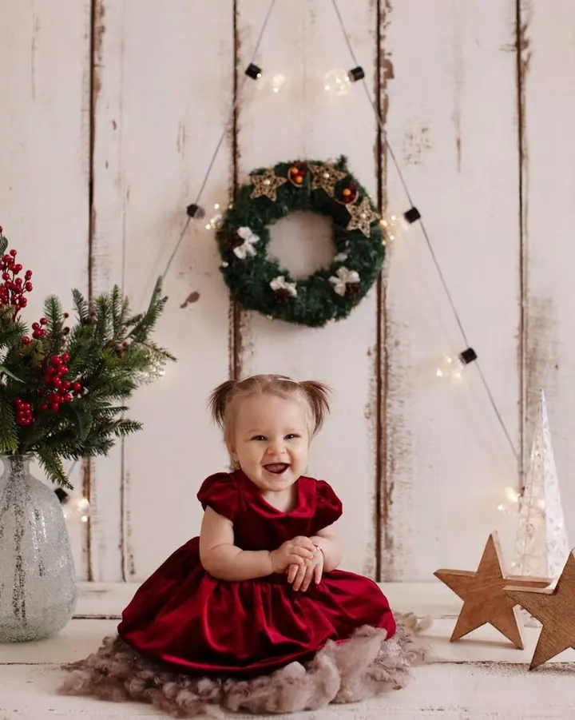
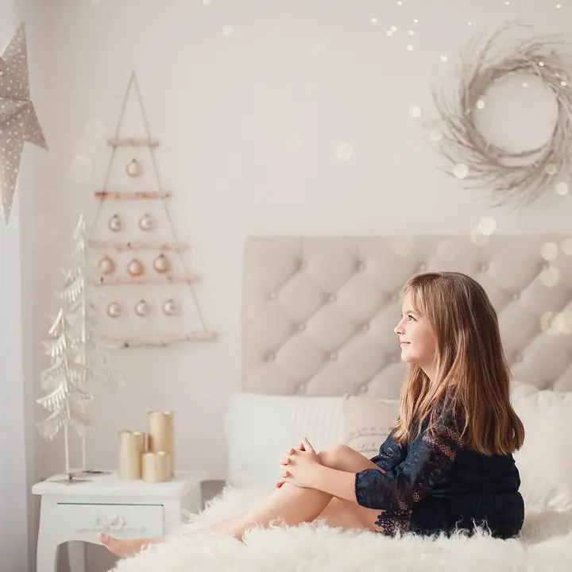
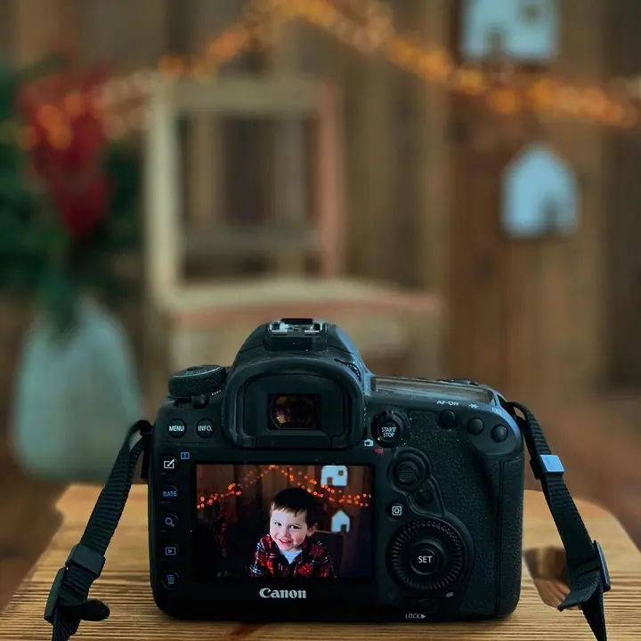

Děti a rodina
Děti fotím, jakmile sedí bez opory, obvykle mezi 7. a 10. měsícem. Ráda fotím i starší děti, narozeniny a celou rodinu.

Jmenuji se Hana Pémová a ve svém ateliéru v Chebu fotím novorozence, děti a celé rodiny. Každý rok pro vás chystám vánoční mini focení a moc ráda fotím také maminky, kte…
Rezervovat termínMůj ateliér najdete v Chebu, v ulici Svobody 19. Fotím tu novorozeňátka, děti, rodiny i těhotné maminky a otevřeno mám každý den podle objednávek.


Děti nejraději fotím od chvíle, kdy samy sedí bez opory, většinou mezi 7. a 10. měsícem. Předtím se miminko těžko správně položí a vykouzlit úsměv je ještě náročnější. Ráda ale fotím i starší děti, narozeniny a celé rodiny.
Těhotné maminky fotím moc ráda a při focení si hraji se světlem. V ateliéru mám pro vás připravené šaty, sukně, šátky i body, které si můžete zapůjčit. Hotové fotky si můžete nechat vytisknout nebo z nich mít fotoknihu.
Co fotím
Děti fotím, jakmile sedí bez opory, obvykle mezi 7. a 10. měsícem. Ráda fotím i starší děti, narozeniny a celou rodinu.
Každý rok připravuji vánoční mini focení se dvěma fotoscénami. Je určené hlavně pro sedící děti a dostanete k němu i vánoční PF v digitální podobě.
Miminka fotím v prvních několika dnech života přímo v ateliéru v Chebu. Termín je dobré domluvit s předstihem.
Na těhotenské focení je ideální 34. až 36. týden, kdy je bříško krásně vyrýsované. V ateliéru si můžete zapůjčit šaty, sukně, šátky i body.
Postup
Termín a druh focení si domluvíme přes formulář, telefon nebo e-mail. Ozvěte se ideálně jeden až dva měsíce předem.
Sejdeme se v mém ateliéru v Chebu. Cena balíčku se platí v den focení.
Do 5 dnů vám pošlu odkaz na online galerii s návodem a vy si z ní vyberete fotky k úpravě.
Upravené fotografie dostanete do 4 až 6 týdnů v online galerii v plném rozlišení. Podle balíčku k nim patří i tištěné fotky nebo fotokniha.
Otázky
Ideální je zhruba 34. až 36. týden těhotenství, kdy je bříško krásně vyrýsované a ještě vás netrápí únava posledních týdnů. Důležité ale je hlavně to, jak se sama cítíte.
Kromě prvních dnů života fotím děti od chvíle, kdy sedí bez opory, obvykle mezi 7. a 10. měsícem.
Balíček mini s 10 upravenými a vytištěnými fotkami stojí 2 000 Kč, maxi s 20 fotkami 3 800 Kč a deluxe s luxusní fotoknihou 5 000 Kč.
Ne. Dostanete fotky, které si vyberete z online galerie a já je pro vás upravím.
Nejlépe oblečení v neutrálních barvách. Nehodí se velké obrázky, výrazné vzory ani výrazné nebo pastelové barvy.